Home / Classroom Climate
Classroom Climate
Character-driven incentive systems that turned effort and persistence into something visible and celebrated — adopted by other teachers campus-wide — and mathematics where the relevance lives in the math itself.
Bengal Excellence Incentive
During the 2024-2025 school year at Braswell High School in Denton ISD, I was assigned Strategic Learning Algebra 1, a course composed entirely of students who had not previously met grade level on the STAAR. Within the first weeks, it became clear that the largest barrier in the room was not mathematical. Many students had internalized the belief that they could not succeed in math, and no amount of reteaching would move them until that belief changed. Drawing from Arthur Costa and Bena Kallick's Habits of Mind framework, which I studied in my Johns Hopkins coursework, I developed Bengal Excellence, a character education program integrating six character traits directly into weekly instruction, with a class competition where one class won a celebration sponsored by a local pizza restaurant.
Students earned points across the six traits, tracked on a weekly class leaderboard, and used "Lead with Confidence" sentence stems to structure peer discussion. The program reframed effort, persistence, and academic risk-taking as competitive, visible, and celebrated behaviors rather than invisible ones. The leaderboard became a centerpiece of class culture, and students who had never volunteered an answer began leading discussions at the whiteboards.
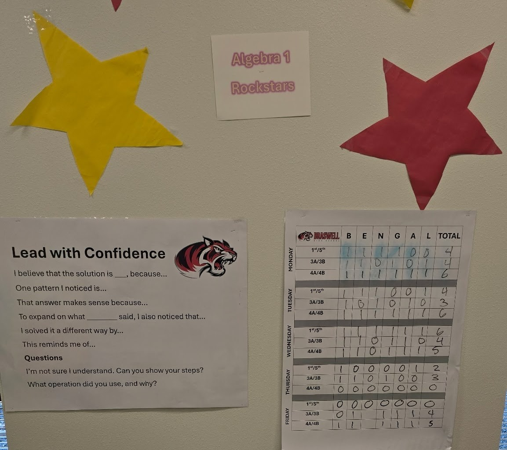
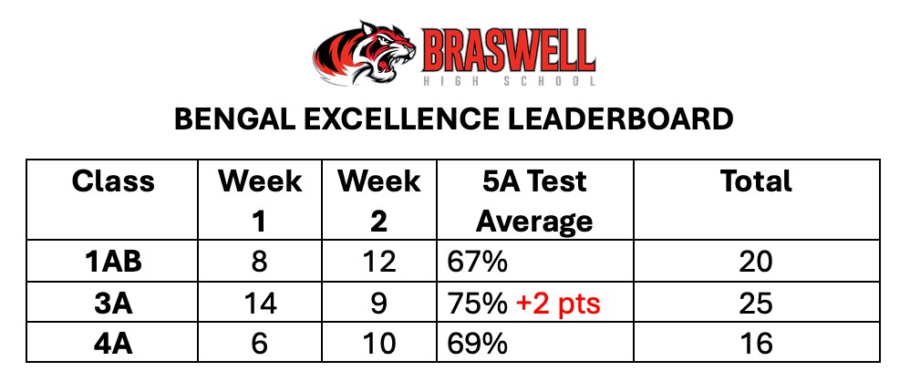
You've created an environment where students feel supported, encouraged, and proud of their growth. Thank you for your commitment and the positive energy you bring to our campus!
HIVE Program Incentive
When I joined Greiner Exploratory Arts Academy in Dallas ISD for the 2025-2026 school year, I was teaching 7th grade math classes of up to 37 students. At that scale, traditional one-on-one redirection simply could not keep pace, and persistent behavioral challenges were cutting into instructional time across the campus. Rather than tightening consequences, I built a similar system to Bengal Excellence in a different school context. The HIVE incentive program centers on four character values: Honor, Integrity, Valor, and Excellence, each tied to specific observable behaviors that students earn points for on a weekly class leaderboard.
I created all supporting materials myself, including character posters defining each value in student-friendly language and a progress tracking board displayed prominently in the classroom. Because the values were concrete and the tracking was public, students began holding each other accountable, and whole-class momentum replaced individual correction as the primary management tool.
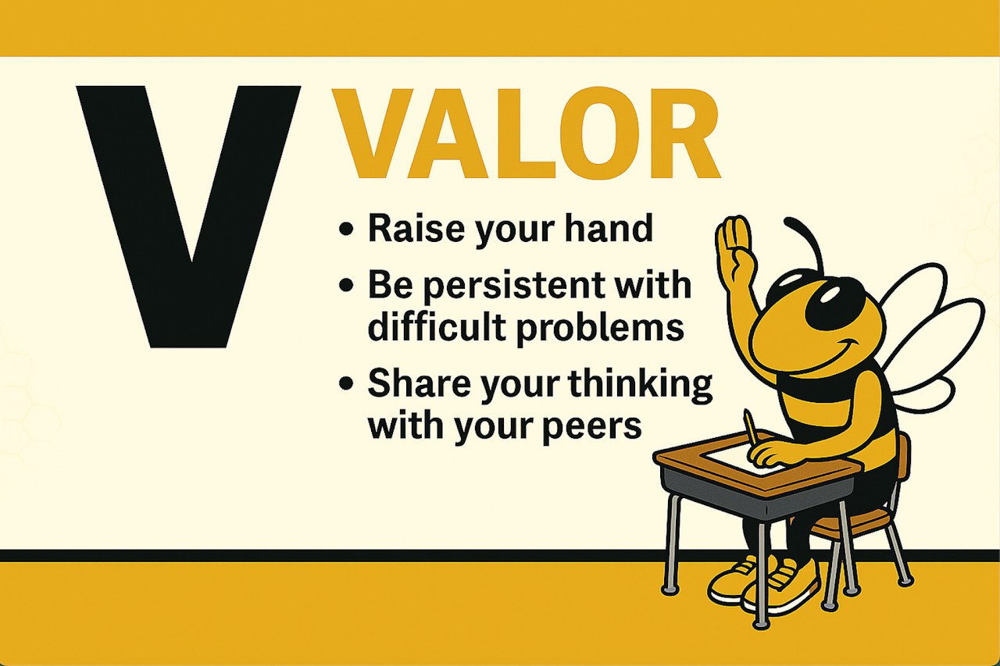
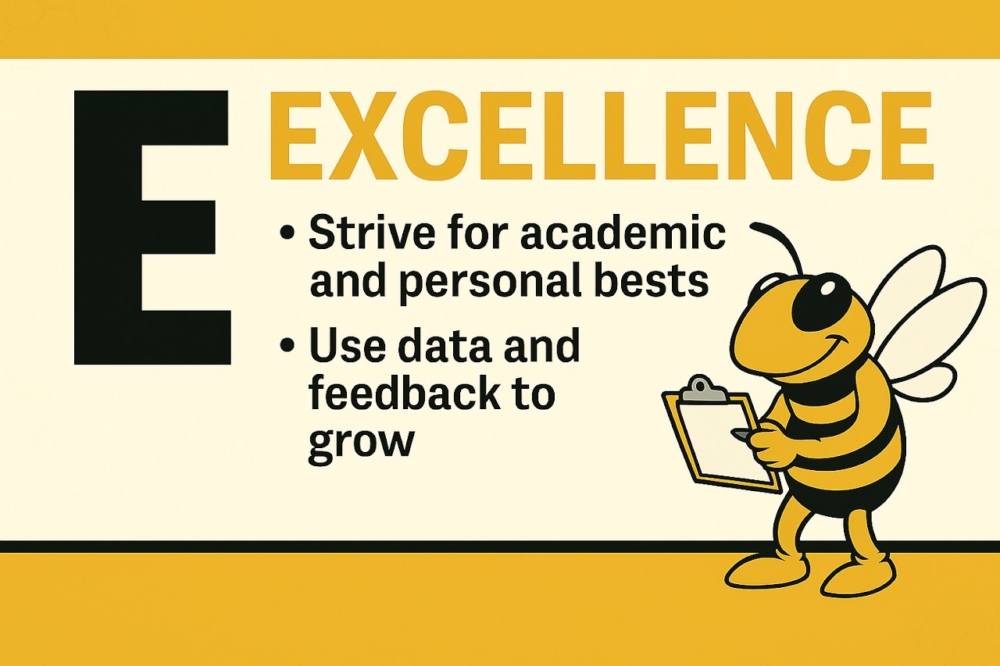
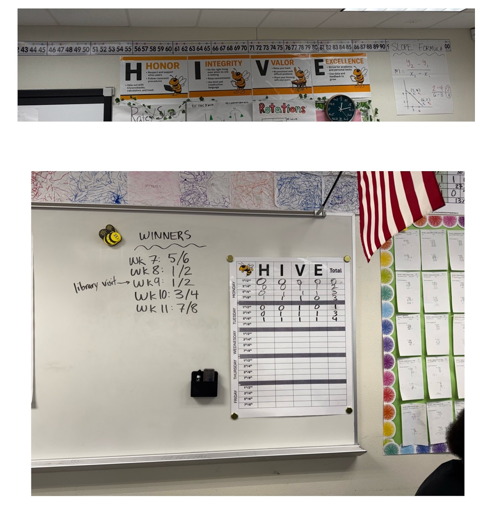
Based on the success of the program in my class, I was asked by the principal to lead a professional development for new teachers in November 2025 about classroom culture and climate, introducing research-based practices to cultivate healthy class-building in the face of any behavioral or academic challenges. Several teachers adopted the HIVE incentive specifically, replicating the posters and language of the character values, even when overall incentives for different teachers differed.
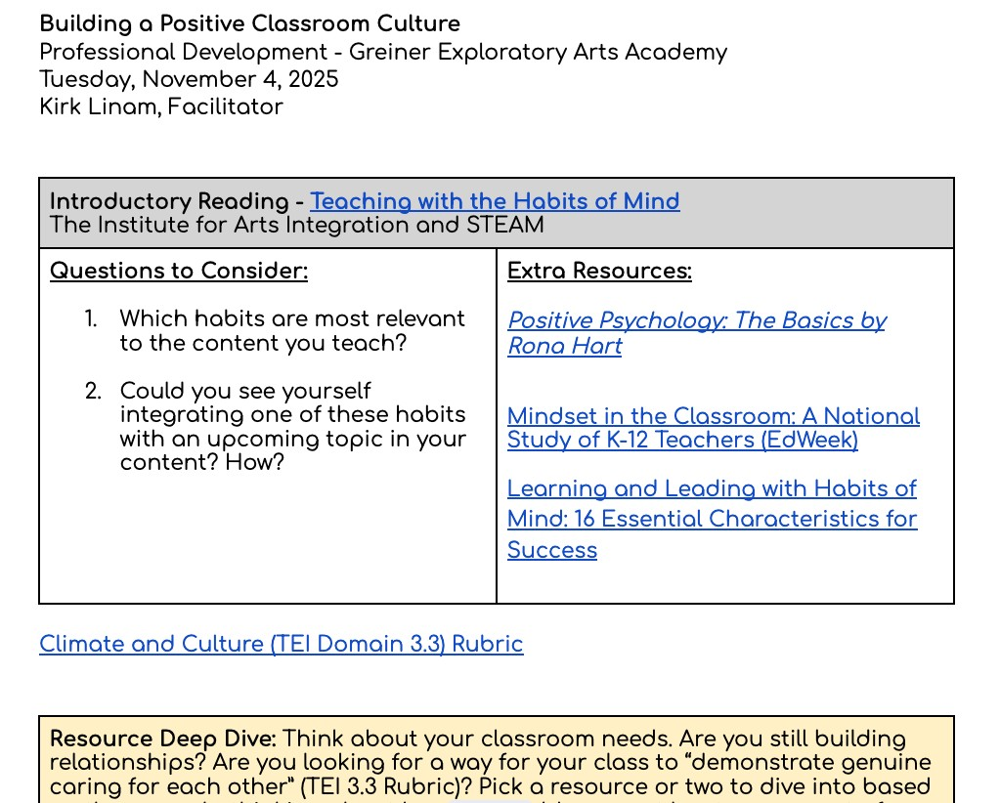
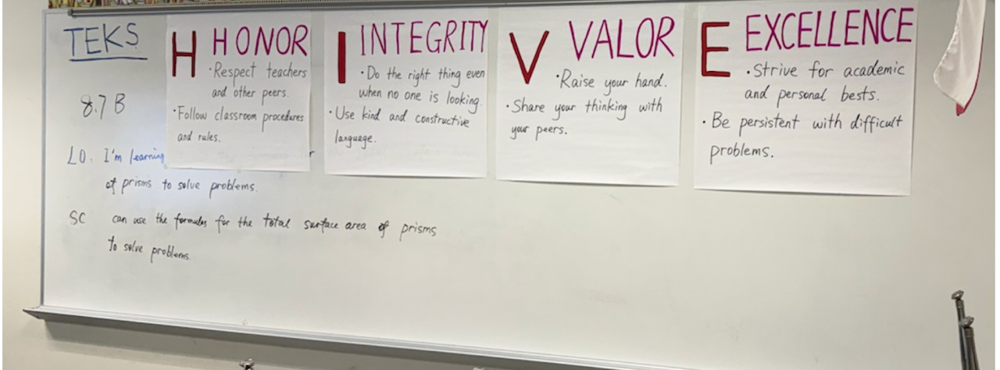
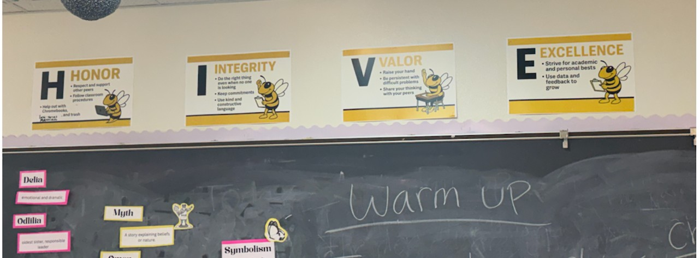
These photos depict other classrooms adopting the same HIVE incentive program. Ultimately, three other teachers fully implemented the program across the 2025-2026 school year.
One data point is restorative action plans first semester vs. second semester so far. In the first semester I had 12 student referrals/restorative action plans where as now currently I have two. That's directly because of implementing HIVE.
Culturally Relevant Education
Culturally responsive pedagogy is most powerful when the mathematics itself carries the relevance, not just the word problems wrapped around it. In March 2026, I designed "Mapping Justice in Dallas: Parks, Space & Equity," a dilations and scale factor investigation built entirely on real parks data from the Trust for Public Land, which reports that residents in low-income Dallas neighborhoods have 16% less park space per person than residents in high-income neighborhoods.
Students analyzed simplified coordinate boundaries of two real Dallas parks: a community park in Southern Dallas (ZIP 75216) and a similarly shaped park in Northern Dallas (ZIP 75225), where the northern park is a dilation of the southern one. The STAAR-aligned questions asked students to identify the dilation rule and use the scale factor to calculate area, directly assessing TEKS 8.3C and 8.10D. But the investigation pushed further: students confronted the fact that the North Dallas park is 2.25 times the area of the South Dallas park despite the neighborhoods having similar populations, and they used scale factor reasoning to model what residents would gain if the city expanded the southern park. Students then created their own alternative representation, dilating the park by a scale factor of 2 and calculating the new area their community would gain.
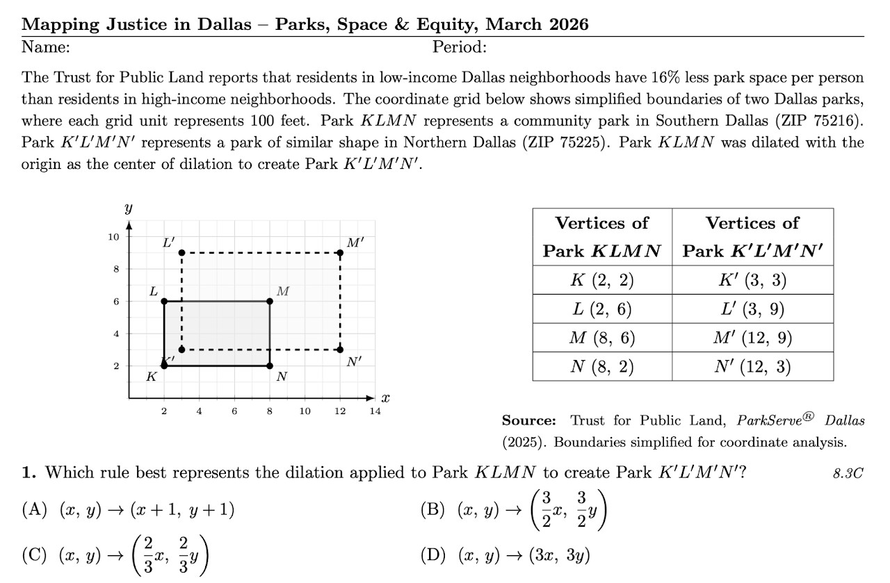
The investigation deepened with a national lens. Using the Trust for Public Land's finding that economically disadvantaged communities have access to 44% less park space than advantaged neighborhoods nationally, students applied the same dilation skills to park data from Houston's Third Ward, San Antonio's West Side, Chicago's South Side, Atlanta's Beltline, and Milwaukee. Every problem maintained full state assessment-level rigor while asking students to read their city, and other cities, through a mathematical lens.
In a culiminating activity, students displayed their alternative park-space representations and made comments on others' work in a gallery walk.
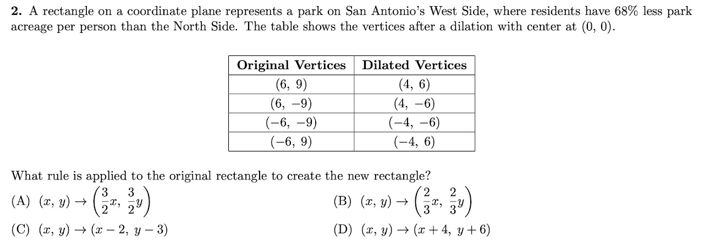
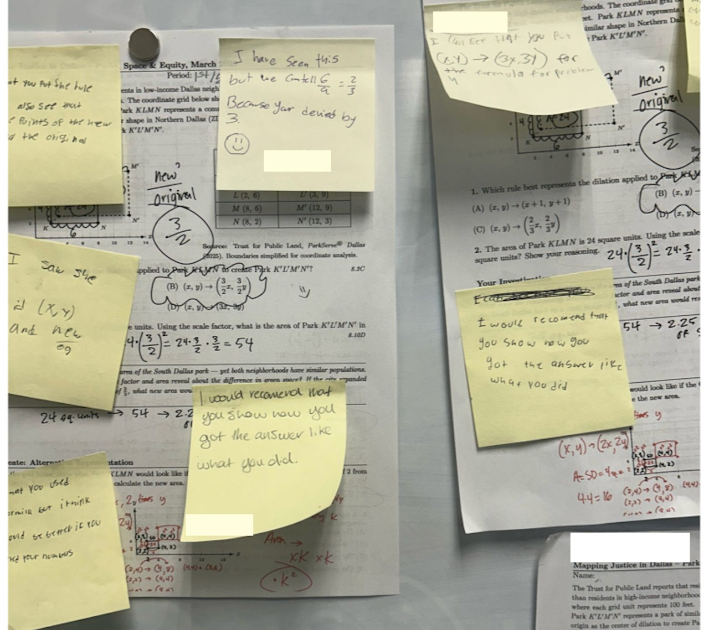